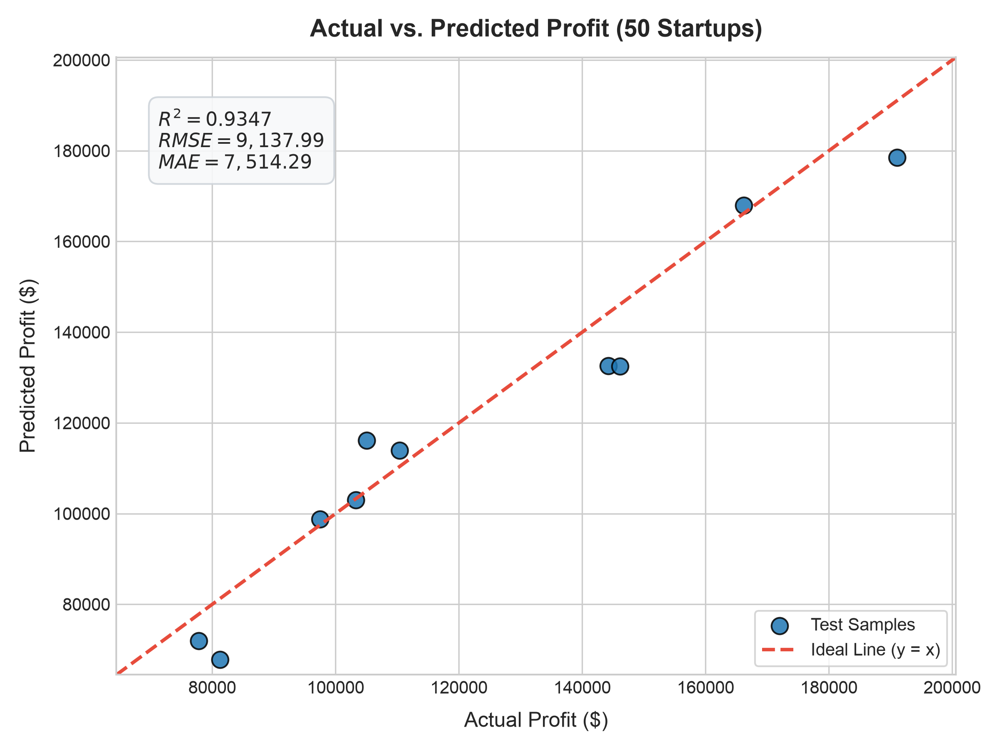

Multiple Linear Regression & Forward Selection Profitability Analytics
An empirical Machine Learning investigation based on the CRISP-DM methodology. Evaluating how operational capital allocation across R&D, Administration, and Marketing influences startup operating profit.
CRISP-DM 6-Phase Lifecycle Explorer
Click through each phase of the Cross-Industry Standard Process for Data Mining to inspect methods, code designs, and statistical outputs.
Phase 1: Business Understanding
Predicting startup profitability is crucial for optimizing investment allocations and reducing early-stage cash burn rates.
Helps investors quantitatively benchmark capital efficiency and predict financial upside based on founders' projected spending distributions.
Enables startup founders to identify high-leverage expenditure categories and cut administrative overhead.
Avoids building overly complex black-box models when linear factors provide clear, actionable insights.
Phase 2: Data Understanding
Dataset programmatically downloaded using Python requests from GitHub repository. 50 observation rows, 5 columns, zero missing values.
| Feature | Type | Mean | Std Dev | Min | Max |
|---|---|---|---|---|---|
| R&D Spend | float64 | $73,721.62 | $45,902.26 | $0.00 | $165,349.20 |
| Administration | float64 | $121,344.64 | $28,017.78 | $51,283.14 | $182,645.56 |
| Marketing Spend | float64 | $211,025.10 | $122,290.31 | $0.00 | $471,784.10 |
| Profit (Target) | float64 | $112,012.64 | $40,306.18 | $14,681.40 | $192,261.83 |
| State | object | 3 categories: California (17), New York (17), Florida (16) | |||
Phase 3: Data Preparation
Solving the Dummy Variable Trap (Multicollinearity) via One-Hot Encoding and strict train-test separation.
df_encoded = pd.get_dummies(df, columns=['State'], drop_first=True, dtype=int)
X_train, X_test, y_train, y_test = train_test_split(X, y, test_size=0.2, random_state=0)
Why drop_first=True? In linear models, if $k$ categories are encoded into $k$ binary dummies, the sum of dummy columns equals the constant column (1.0), causing perfect multicollinearity $(X^TX)^{-1}$ singularity. Dropping California sets it as the baseline reference category.
Phase 4: Modeling (Full 5-Feature Linear Regression)
Trained via Ordinary Least Squares (OLS) on the 40-sample training partition.
Predicted Profit = 42,554.17 + 0.7735(R&D) + 0.0329(Admin) + 0.0366(Marketing) - 959.28(Florida) + 699.37(New York)
| Feature | Coefficient (β) | Standardized Impact | Interpretation |
|---|---|---|---|
| R&D Spend | +0.773467 | Strong primary driver. +$0.77 profit per $1 R&D. | |
| Administration | +0.032885 | Negligible direct influence (~$0.03 per $1). | |
| Marketing Spend | +0.036610 | Modest positive contribution (~$0.037 per $1). | |
| State_Florida | -959.284 | Relative penalty vs California baseline. | |
| State_New York | +699.369 | Slight premium vs California baseline. |
Phase 5: Evaluation (Full Model vs Optimal Subset)
Out-of-sample performance on the held-out 10-sample test set.
Actual vs. Predicted Profit Visualization (Test Set)
Full Resolution
Phase 6: Deployment & Artifact Pipeline
Automated execution, self-contained artifacts, and practical guidelines for business deployment.
Threats to Validity & Limitations
- Sample Size ($N=50$): Benchmark sample; real-world deployment requires ongoing retraining across economic quarters.
- Association vs. Causation: High R&D expenditure correlates with profit, but strategic execution and product-market fit remain vital.
Forward Selection with 5-Fold Cross-Validation
Iterative greedy forward selection tested feature subsets from $k=1$ to $k=5$. Each feature was selected based strictly on the Training Set 5-Fold CV RMSE (Zero Test Leakage).
Error & Performance Curves ($k=1$ to $5$)
Comparing Train CV RMSE, Test RMSE, and Test R²Iterative Selection Steps
5 Steps CompleteComplete Forward Selection Results Table (CSV View)
Download CSV| Step (k) | Added Feature | Selected Features List | Train 5-Fold CV RMSE ($) | Test RMSE ($) | Test R-squared | Status |
|---|---|---|---|---|---|---|
| 1 | R&D Spend | R&D Spend |
$9,745.40 | $8,274.87 | 0.9465 | Baseline |
| 2 | Marketing Spend | R&D Spend, Marketing Spend |
$9,482.34 | $8,198.80 | 0.9474 | ★ Optimal Model |
| 3 | Administration | R&D Spend, Marketing Spend, Administration |
$9,678.08 | $8,803.78 | 0.9394 | Overfitting Begins |
| 4 | State_Florida | R&D Spend, Marketing Spend, Administration, State_Florida |
$9,885.56 | $9,068.54 | 0.9357 | Increased Variance |
| 5 | State_New York | R&D Spend, Marketing Spend, Administration, State_Florida, State_New York |
$10,158.66 | $9,137.99 | 0.9347 | Full Model |
Live Startup Profit Prediction Engine
Adjust budget inputs across spending categories and geography to calculate expected profit in real-time, powered directly by our trained scikit-learn coefficients.
Input Startup Financials
Real-Time Prediction Output
Live MathProfit Attribution Breakdown
50 Startups Dataset Explorer
Search, filter by state, and sort all 50 startup records used to train and validate our regression pipeline.
| # | R&D Spend ($) | Administration ($) | Marketing Spend ($) | State | Profit ($) |
|---|